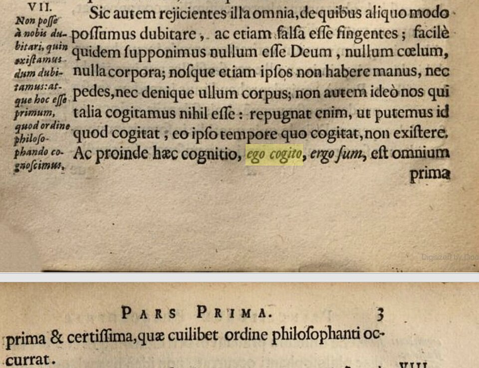
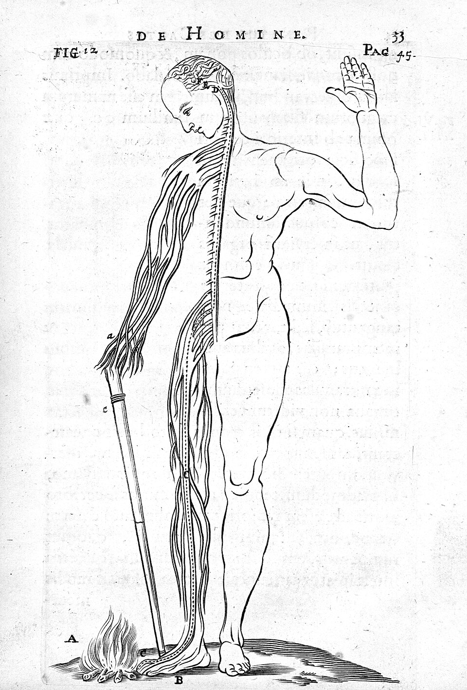
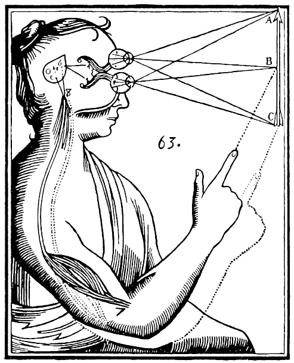

普遍怀疑：一把有三级挡位的筛子
最常见的误读是把它当成"什么都不信"的犬儒态度。恰恰相反——这是一套目标明确的清场程序，而且笛卡尔非常清楚自己想留下什么。他要找的不是"很可能对的东西"，是"哪怕被最强的力量针对也倒不了的东西"。所以标准被故意抬到荒谬的高度：只要能设想出一种它为假的可能，就算它倒了。
三级递进，一级比一级狠
第一级，感官会骗人。远处的方塔看着是圆的，太阳看上去只有盘子大。笛卡尔的规矩很硬：凡骗过我一次的，我不再完全信任它。但这一级火力有限——它动摇不了"我此刻坐在火炉边、手里拿着一张纸"这类近处的、无可置疑的事。
第二级，梦境论证。这一级把近处的事也拿走了：我在梦里同样确信自己坐在火炉边，而没有任何可靠的标记能把醒和梦分开。于是"我有一个身体""外面正在下雨"全部沦陷。但梦境论证有它够不着的地方——梦里 2+3 依然等于 5。数学和几何这类东西，不管我醒着还是睡着都为真。
第三级，恶魔假设。为了连数学一起拿下，笛卡尔请出了那个著名的东西：
Supponam igitur non optimum Deum, fontem veritatis, sed genium aliquem malignum eundemque summe potentem et callidum omnem suam industriam in eo posuisse, ut me falleret. 那么我就假设：不是那至善的、作为真理之源的上帝，而是某个恶意的精灵，一个极有能力、极其狡猾的东西，用尽了它全部的本事来骗我。 Meditationes I，1641（拉丁通行本 / AT VII）
动手：怀疑三级筛
下面是这一站的签名实验台。左边是十一条你此刻多半认为为真的信念，上面是三级怀疑的挡位。逐级推下去，看哪些还站着。推到底之后，还可以按第三、五、六沉思的路子把世界赎回来——注意看哪几条赎不回来，那是整个体系最精彩的地方。
二、它在日常生活中明确失效，笛卡尔自己划了界。《谈谈方法》第三部分他给自己立了一套"临时道德准则"：在拆房子重建期间，得先租个住处。行动的领域用概然性就够了，只有奠基的领域才需要绝对确定性。
三、它的强度可能过头了。这是后世最主要的攻击点：一个连"2+3=5"都要求担保的标准，最后只能靠上帝来兜底；而一旦上帝那一环出问题（见 Concept III），整栋楼就塌回原地。
我在，我存在——那句名言的三个版本
这是本站最想让你带走的一条考据。"我思故我在"流传得太广，以至于几乎没人注意到：笛卡尔在三本书里写了三个不同的版本，而流传最广的那个拉丁文，不在最重要的那本书的正文里。
| 著作 | 年份 / 语言 | 原文 | 位置 |
|---|---|---|---|
| 谈谈方法 | 1637 · 法文 | je pense, donc je suis | 第四部分 |
| 第一哲学沉思集 | 1641 · 拉丁文 | ego sum, ego existo | 第二沉思（AT VII 25） |
| 哲学原理 | 1644 · 拉丁文 | ego cogito, ergo sum | 第一部分第 7 节 |
…denique statuendum sit hoc pronuntiatum: ego sum, ego existo, quoties a me profertur, vel mente concipitur, necessario esse verum. ……最后必须确定："我在，我存在"这个命题，每当我说出它、或在心里设想它的时候，必然为真。 Meditationes II，1641（拉丁通行本 / AT VII 25）

Ac proinde hæc cognitio, ego cogito, ergo sum, est omnium prima & certissima, quæ cuilibet ordine philosophanti occurrat.
（因此，"我思故我在"这一认识，是任何按次序进行哲学思考的人所遇到的最先、最确定的认识。）
请记住这张图上的年份：1644。不是 1641，也不是那本以"我思"闻名的书。 Wikimedia Commons · 公有领域（高亮为原上传者所加）
为什么这个差别要紧
因为 ergo（所以）这个词决定了它是不是一个推理。如果是推理，它就需要一个大前提——"凡思维者皆存在"——而那个大前提本身还没被证明，整个论证就循环了。这正是伽森狄的攻击方向。
笛卡尔的回应很干脆：在《第二组答辩》里他明确说，"我思故我在"不是三段论推出来的，而是心灵的一次直接直观（simplici mentis intuitu）。你不是先知道"凡思维者皆存在"再套用，而是在你怀疑的那一刻，直接看到了自己在。
现在回头看《沉思集》的措辞就明白了：第二沉思里根本没有"所以"。只有"我在，我存在"，以及一个限定条件——"每当我说出它或设想它的时候"。这是一个在执行中才为真的命题，不是一条永恒定理。
清楚且分明——以及那个著名的圆圈
从"我在"这一块地基上，笛卡尔提炼出了通用的真理标准：我为什么确信这一条？因为我对它的知觉清楚而分明。那就把这个特征提出来当规则：
…illud omne esse verum quod valde clare et distincte percipio. 凡是我极清楚、极分明地知觉到的东西，都是真的。 Meditationes III，1641（拉丁通行本 / AT VII 35）
两个词各有分工，《哲学原理》第一部分第 45 节做了区分：清楚（clara）指它当下呈现在专注的心灵面前，像看得见的东西那样明白；分明（distincta）指它与其他一切都界限清晰，里面不掺任何别的东西。笛卡尔举的例子很妙：剧烈的疼痛是清楚的（你不可能不注意到它），但一点也不分明（你说不清它到底是什么）。
阿尔诺的一刀
问题出在下一步。笛卡尔要用这条规则去证明上帝存在，然后再用"上帝是完满的，因而不会骗人"来担保这条规则可靠。阿尔诺在《第四组反驳》里当面指出了这个结构：
我还有一个疑虑，就是作者如何避免循环论证——他说，我们之所以确信凡清楚分明知觉到的都是真的，只是因为上帝存在；可我们之所以能确信上帝存在，又只是因为我们清楚分明地知觉到了这一点。 Antoine Arnauld，《第四组反驳》，1641（英译 CSM II 150 / AT VII 214）
这就是哲学史上标准教学案例"笛卡尔循环"。笛卡尔的答辩诉诸一个区分：证明上帝存在的当下，我正在专注地进行那个清楚分明的知觉，此时它无需担保；上帝担保的是后来我只是"记得"曾经清楚知觉过的那些结论。
两种实体：定义得越干净，越接不上
第六沉思完成了那次著名的分割。思维的东西（res cogitans）：不占空间、不可分割、本质是思。广延的东西（res extensa）：占空间、可无限分割、本质是广延。
第二沉思对前者给过一份清单，值得注意它有多宽：
res cogitans; quid est hoc? nempe dubitans, intelligens, affirmans, negans, volens, nolens, imaginans quoque, et sentiens. 一个思维的东西；这是什么？也就是说：一个怀疑、理解、肯定、否定、意愿、不愿，并且也想象和感觉的东西。 Meditationes II，1641（拉丁通行本 / AT VII）
注意最后两项：想象和感觉也被划进了"思维"。笛卡尔的"思"不是"推理"，而是"一切意识活动"。这是理解他的关键——很多批评其实打的是"思=冷冰冰的逻辑"这个中文语感造出来的靶子。
二十四岁的诘问
1643 年 5 月 6 日，波希米亚的伊丽莎白公主（Elisabeth of Bohemia，1618–1680）——"冬王"腓特烈五世之女，当时二十四岁，随家族流亡海牙——写信给笛卡尔，提了一个到今天都没被回答的问题：
请您告诉我，人的灵魂既然只是一个能思维的实体，它如何能够决定动物精气的运动，从而完成自主的行动？ 伊丽莎白致笛卡尔，1643 年 5 月 6 日（据 Adam-Tannery 版编号；引文为学术英译本转译）
这一刀正中要害：因果作用需要某种共同的东西来传递——接触、冲击、表面。而笛卡尔恰恰把灵魂定义成了没有任何这类属性的东西。定义得越干净，越无法接上。
笛卡尔的回应（1643 年 6 月 28 日）提出了"原初概念"：理解灵魂靠纯粹理智，理解物体靠理智加想象，而理解灵魂与身体的结合是第三种原初概念——它既不能靠理智分析，也不能靠想象，只能靠日常生活的经历去把握。
顺带一件该纠正的事：她长期被写成"笛卡尔的学生"或"通信对象"。Lisa Shapiro 2007 年的学术译注本（芝加哥大学出版社）之后，学界已经把她重新定位为独立哲学家——斯坦福哲学百科为她单列词条，评价其在因果性、心灵本性、德性与治理等问题上都有自己的正面立场。
十七世纪的三种绕道
伊丽莎白提出的难题，直接催生了此后三十年的三个大体系。它们的共同前提是：承认笛卡尔式的实体互动讲不通。
取消两个实体
心与物不是两样东西，是同一个实体（神即自然）的两种属性。它们不互相作用，只是平行地呈现同一个事件。
取消因果
偶因论：唯一真正的原因是上帝。你抬手不是意志推动了肌肉，是上帝在意志出现时顺势让肌肉动了。
取消互动
预定和谐：单子之间没有窗户，互不作用。心与身像两只在创世时就对好了的钟，永远同步，从不接触。
三条路各走各的，但都在做同一件事——为了保住这个问题，牺牲掉笛卡尔的一部分前提。还有两位常被漏掉的批评者：Anne Conway 指出二元论自相矛盾（一边否认灵魂有广延和可分性，一边又用"位置""所在"这类空间语言描述它）；Margaret Cavendish 则直接走向唯物一元论。她们的攻击点和伊丽莎白一致，但走向了取消二元论而非修补它。
身体是一台机器——包括那个代价
分割的另一半后果是：既然身体属于纯粹的广延世界，它就该像钟表一样完全用机械原理解释。笛卡尔为此写了《论人》（生前未刊；1662 年先出拉丁文译本《De homine》，1664 年才出法文原本），提出了一个后来被证明方向正确的构想：
外部刺激沿神经传到脑，脑再把指令送回肌肉，整个过程不需要意识参与。这是反射弧最早的系统构想，他也因此被公认为反射理论的奠基人。
错：他设想的机制是液压式的——神经是管道，"动物精气"（esprits animaux）像液体一样在里面流动推动肌肉。实际的机制是电化学信号，要到十九世纪之后才被认识。


松果体：一个被反复嘲笑、但推理并不愚蠢的选择
如果两种实体必须在某处接头，接头在哪？笛卡尔选了松果体。《论灵魂的激情》（1649）第 31 节标题：
Qu'il y a une petite glande dans le cerveau en laquelle l'âme exerce ses fonctions plus particulièrement que dans les autres parties. 论脑中有一个小腺体，灵魂在其中比在其他部位更特别地行使其功能。 Les Passions de l'âme，第一部分第 31 节，1649
理由是一个漂亮的对称性论证：灵魂是单一不可分的，那么它与身体最直接相连的部位也应当是单一的、不成对的。而大脑的其他部分——两个半球、两只眼睛、两条神经——全是成对的。松果体不是。

笛卡尔的整个论证就藏在"两个变成一个"这一步里：视觉是成对的，而我的意识经验只有一份。那么必定有个地方把两份合成一份——他认为那只能是脑中唯一不成对的那个器官。 推理很漂亮。前提是错的。 Wikimedia Commons · 公有领域
还有一个细节：笛卡尔在《论灵魂的激情》正文里从没用过 conarion 这个词，全书一律说"脑中的一个小腺体"。conarion 出现在他的书信里（如 1640 年致梅森的信）。二手材料常把它当成书里的术语引用。
代价：动物是机器
这个框架推到底就有了 bête-machine——动物是机器。出处需要说准：这一主张的公开发表位置是《谈谈方法》1637 年第五部分，不是《论人》（后者虽然写得更早、提供了机制基础，但笛卡尔生前从未出版）。
笛卡尔的论证是从第二条判据反推的：动物没有表现出语言的创造性使用，也没有普遍适应性，所以它们没有思维；而在他的体系里"思维"涵盖一切意识活动——包括感觉。于是结论是：动物不会真正地痛。
方法四规则，和它背后的赌注
《谈谈方法》第二部分。笛卡尔说他把逻辑学、几何分析与代数的长处全部提炼，只留下四条：
不接受任何我没有明确认识到是真的东西
de ne recevoir jamais aucune chose pour vraie que je ne la connusse évidemment être telle
——即：小心避免仓促的判断与成见，只把清楚分明呈现给心灵、无从怀疑的东西纳入判断。
把每个难题分成尽可能多的部分
de diviser chacune des difficultés que j'examinerois, en autant de parcelles qu'il se pourroit
——分到"足以更好地解决它"的程度。这是四条里对后世工程与科学影响最大的一条。
按次序引导思想，从最简单最易知的开始
de conduire par ordre mes pensées, en commençant par les objets les plus simples et les plus aisés à connoître
——一级一级上升到最复杂的知识，甚至在本无次序的对象之间也假定一个次序。最后半句是笛卡尔式的胆量：秩序找不到就先设一个。
处处做完全的枚举与普遍的复查
de faire partout des dénombrements si entiers et des revues si générales, que je fusse assuré de ne rien omettre
——确信没有遗漏任何东西。这是防"分析漏项"的补丁。
整条链子，以及它的三个断点
把六个概念按笛卡尔的顺序串起来，你会看到一个结构极紧的推理链——紧到任何一环松动，后面全部作废：
所以这座站真正想留给你的，不是"笛卡尔说得对不对"。是这个：一个足够诚实的体系，会把自己的反对意见印在同一本书里。《沉思集》初版就带着六组反驳出版，笛卡尔亲自把最锋利的攻击排在自己的正文后面。 三百八十多年后，这仍然是一个很高的标准。